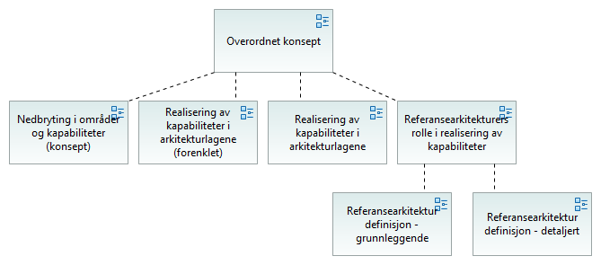

Inngangsport - overordnet rammeverk
(
)

difi:language
no
difi:name_no
Inngangsport - overordnet rammeverk
difi:name_en
difi:description_no
difi:description_en
Referansearkitektur definisjon - grunnleggende
Nedbryting i områder og kapabiliteter (konsept)
Overordnet konsept
Realisering av kapabiliteter i arkitekturlagene
Realisering av kapabiliteter i arkitekturlagene (forenklet)
Referansearkitektur definisjon - detaljert
Referansearkitekturers rolle i realisering av kapabiliteter